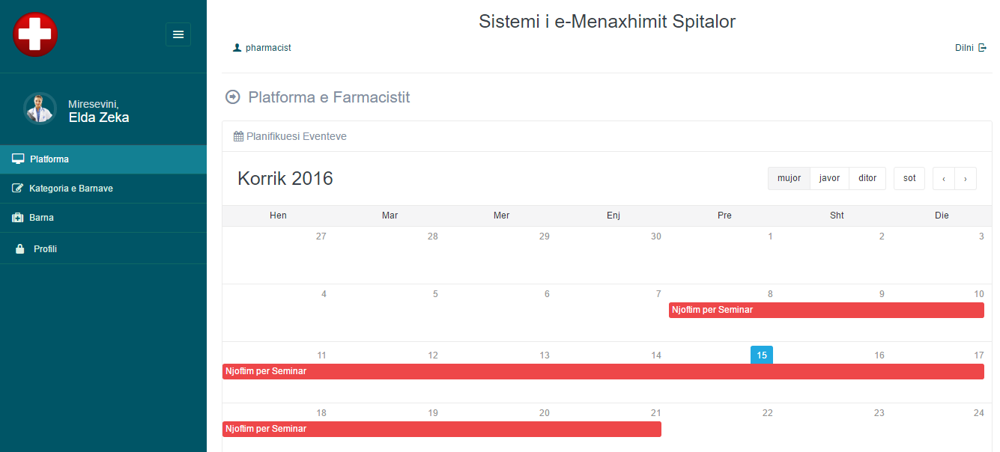

Sistemi i e-Menaxhimit Spitalor
Sistemi i Avancuar i Menaxhimit Spitalor, Klinik ose Institute Shendetesore
Faleminderit per interesin e treguar per softin tone. Nese keni pyetje qe dalin matane skopit te ketij manuali ndihmes, ju lutemi te mos hezitoni te kontaktoni nepermjet postes elektronike duke shfrytezuar formen e kontaktit, krijuar enkas per kete qellim.

Tiparet kryesore
- Administratori
- Mjeku
- Pacienti
- Infermieri
- Farmacisti
- Laboranti
- Llogaritari
Instalimi
- Dosja klinika eshte e kompresuar me winrar
- Ngarkohet dosja me emrin klinika (qe mund ta kemi kompresuar me winrar, per te pershpejtuar procesin e ngarkimit) ne direktorine "public html" te serverit
- Extraktohet skedari klinika.rar
- Krijojme nje database te re nga server mysql ose phpmyadmin
- Krijohet nje perdorues per databazen, lidhet databaza me kete perdorues duke i dhene atij te gjitha privilegjet
- Hapet skedari i ndertuar enkas per te dhenat e aksesimit te bazes se te dhenave. Ky skedar eshte emertuar database.php dhe ndodhet ne lokacionin: /apliakacioni/config/database.php
- Plotesohen informacionet e kerkuara per aksesimin e database, te cilat jane: hostname, database username, database password, database name te cilat respektivisht i kemi nga hapi i krijimit te databazes.
- Ne vazhdim qe nga utiliteti phpmyadmin i serverit shkohet tek databaza ne rastin tone me emrin klinika. Zgjidhet opsioni import dhe me pas zgjidhet skedari instalimi.sql qe ndodhet tek uploads/instalimi.sql
- Nga ky moment e ne vazhdim mund te startojme aplikacionin
- Kredencialet e adminit jane: Email: admin@klinika.al Passwordi: 123456
Administratori -
- Menaxhon Pavionet e Klinikes
- Menaxhon llogarite e Mjekve
- Menaxhon llogarite e Pacienteve
- Menaxhon llogarite e Infermiereve
- Menaxhon llogarite e Farmacisteve
- Menaxhon llogarite e Laboranteve
- Menaxhon llogarite e Llogaritareve
-
Monitoron eventet ne Klinike si:
- Sheh vizitat e mjekeve
- Sheh raportet e pagesave te pacienteve
- Sheh statusin e dhomave dhe shtreterve ne to
- Sheh raportin e Bankes se Gjakut
- Sheh gjendjen e Barnave ne Klinike
- Sheh raportet e operacioneve
- Sheh raportet e lindjeve
- Sheh raportet e diagnozave
- Sheh raportet e vdekjeve
- Nderton grafike me te dhenat e vizitave dhe pacienteve ne klinike
- Kontrollon Dokumentat e cdo pacienti
- Sheh statusin e shtreterve dhe historikun e pranimeve
- Menaxhon Njoftimet per te gjithe perdoruesit e Klinikes
- Menaxhon Rregullimet e Sistemit
- Sheh logimet ne sistem dhe nderveprimin e perdoruesve
- Menaxhon gjuhet e softwar-it
- Create your own language and convert the language phrases easily
- Create backup and restore anytime
- Manage own profile
- Access account from anywhere, by any device like desktop, laptop, smartphone and tablet

Mjeku -
- Menaxhon llogarite e pacienteve duke i krijuar apo perditesuar
- Krijon dhe menxhon vizitat me klientet
- Krijo receta per pacientet
- Ruan te dhenat e historikut te trajtimit te nje pacienti
- Ofron kurimin per pacientet e shtruar ne klinike
- Sheh raportet e diagnozave te pacienteve si dhe analizat e kryera neper laboratoret e klinikes
- Kryen shtrimin e pacienteve, ose daljen e tyre nga pas kurimit
- Sheh gjendjen e Bankes se Gjakut
- Kryen operime dhe harton raportin e tyre per pacientett
- Menaxho profilin e vet
- Akseson llogarine e vet gjithandej dhe me gjithfarelloj pajisjesh

Pacienti -
- Sheh listen e vizitave dhe statusin e tyre tek mjeku.
- Sheh recetat/mjekimin e dhene nga mjeku.
- Sheh mjekimin e ndjekur nga infermieri.
- Sheh/Shkarkon te gjitha raportet e mundshme te krijuara nga sistemi per te.
- Sheh listen e mjekeve disponibel.
- Sheh statusin e Bankes se Gjakut
- Sheh historikun e operacioneve te kryera
- Sheh historikun e shtrimeve, pavionin, shtratin, periudhen e shtrimit, etj
- Sheh faturat e pagesave
- Paguan ne menyren cash prane llogaritarit ose me metoden online
- Menaxhon profilin e tij
- Akseson sistemin gjithandej ku ka internet, si dhe nga paisje e munshme si desktop, laptop, smartphone dhe tablet

Infermieri -
- Menaxhon pacientet, krijon dhe perditeson llogarite e tyre
- Kontrollon gjendjen e shtreterve dhe ngarkesat e pavioneve nga pacientet
- Ofron mjekimin me barna sipas recetes se leshuar nga mjeku
- Menaxhon Banken e Gjakut dhe e perditeson gjendjen e saj
- Menaxhon dhuruesit e gjakut
- Ruan regjistrimet per operacionet e pacienteve, si dhe raportet e lindjeve apo vdekjeve
- Menaxhon profilin e tij
- Akseson sistemin gjithandej ku ka internet, si dhe nga paisje e munshme si desktop, laptop, smartphone dhe tablet
Farmacisti -
- Miremban barnat
- Ruan rekordet e stokut te barnave te spitalit duke ndjekur gjendjen e barnave
- Menaxhon kategorite e barnave
- Sheh recetat e leshuara per pacientet
- Ofron barnat sipas recetave
- Menaxhon profilin e tij
- Akseson sistemin gjithandej ku ka internet, si dhe nga paisje e munshme si desktop, laptop, smartphone dhe tablet

Laboranti -
- Sheh listen e recetave
- Ngarkon raportet diagnostifikuese
- Sheh skedaret e raporteve te ndryshme te analizave me rreze, skanera etj.
- Menaxhon Banken e Gjakut
- Menaxhon dhuruesit e gjakut dhe miremban te dhenat e statusit te tyre
- Menaxhon profilin e tij
- Akseson sistemin gjithandej ku ka internet, si dhe nga paisje e munshme si desktop, laptop, smartphone dhe tablet
Llogaritari -
- Krijon fatura per pagesat e sherbimit
- Dergon faturat tek pacientet
- Pranon pagesa cash te faturave
- Ndjek historikun e pagesave te pacienteve duke i perditesuar statuset e tyre
- Menaxhon profilin e tij
- Akseson sistemin gjithandej ku ka internet, si dhe nga paisje e munshme si desktop, laptop, smartphone dhe tablet
Rregullimi i gjuhes se sistemit
Sistemi eshte i dizenjuar ne kater gjuhe kryesore, konkretisht ne shqip, anglisht, italisht dhe gjermanisht. Per ndryshimin e gjuuhes se interfaces veprohet keshtu
- Logohemi si administrator
- Shkojme tek opsioni Rregullimet > Menaxho gjuhen
- Mund te zgjidhni nje nga gjuhet ose mund te shtoni nje gjuhe te re duke perkthyer frazat e gjuhes duke shtuar gjuhen e re ne databaze
-
Perditesoni ndryshimet e bera dhe gjithcka eshte gati
Importimi i paketes se gjuhes
Per nje lehtesi me te madhe ne pershtatjen e gjuhes se interfaces, eshte parapare mundesia e shtimit te paketave te gjuheve edhe me ane te phpmyadmin. Per kete me pare shtojme frazat e asaj gjuhe ne skedarin gjuha.sql, e cila permban scriptin e shtimit te te dhena ne databaze, ne tabelen gjuhet
- Logohemi ne phpmyadmin
- Zgjedhim opsionin database, ku duhet ekzekutuar scripti
- Zgjedhim opsionin import ne anen e djathte
- Ngarkojme skedarin gjuhet.sql te cilin e kemi vendosur ne direktorine 'uploads' dhe realizojme importimin
-
Numri i gjuheve eshte shtuar gje qe mund ta shohim ne Platformen e Admin
Rregullimet e sistemit
- Logohemi si admin
- Zgjedhim menune Rregullimet -> Rregullimet e Sistemit
- Zgjedhim opsionin e duhur per standartet kryesore si ne figuren me poshte
- Mes opsioneve vecojme opsionin Orientimi i tekstit -> Nga e Majta ne te Djathte ose ( LTR ) si dheNga e Djathta ne te Majte ( RTL )
- Ruajme ndryshimet e bera
Rregullimet SMS
- Logohemi si admin
- Zgjedhim menune Rregullimet -> Rregullimet SMS
- Zgjedhim opsionin e duhur per Userin, passwordin dhe Api ID
- Ruajme ndryshimet e bera
Backup dhe restore
-
Mund te krijojme kopje backup per objekte individual dhe me pas te mund ti perdorim per restore-
- Mjeku
- Pacienti
- Infermieri
- Farmacisti
- Laboranti
- Llogaritari
- Vizitat
- Pagesat
- Banka e Gjakut
- Barnat
- Raportet
- Njoftimet
- Logimi
- Gjuhet
Responsiviteti i Sistemit
- I gjithe Sistemi eshte responsive. Per rrjedhoje mund ta menaxhoni punen tuaj kudo dhe me cfaredo paisje qe keni me vete.
Suport prej zhvilluesit
Per cdo paqartesi ose info me te detajuar mund te kontaktoni me ILIRJAN REXHO, nepermjet PM. Vizitoni faqen tone Computer House Ju faleminderit per interesimin.